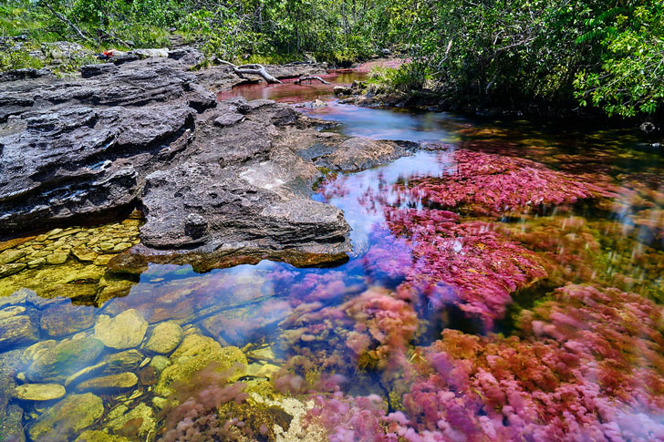
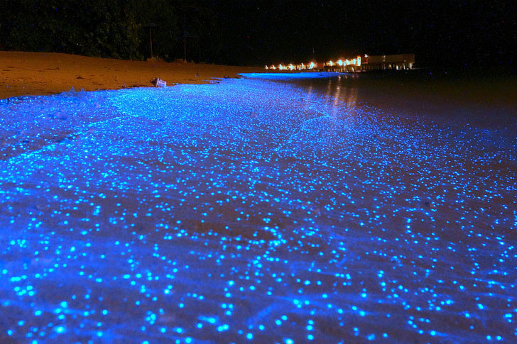
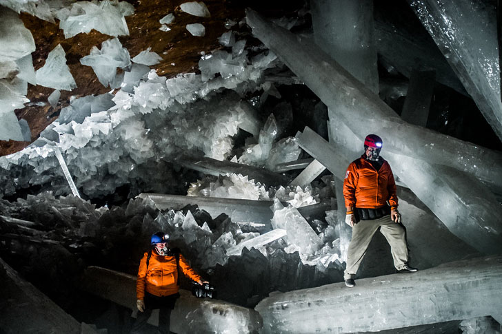

まだ知られていない驚きの名所
初めて訪れた場所でその美しさに心奪われる体験は、旅行の醍醐味です。そこがまだほとんどの人が見たことのない場所であれば、より大きな達成感が得られます。この壮大な惑星には、どれだけ旅慣れた人でも驚いて腰を抜かすような、まだ知られていない名所があちこちに散らばっています。
世界は生命に満ちていて、そこにはこれまで見たことのない、息を呑むような風景が広がっています。納得の秘境をいくつかご紹介しますので、投資資金を散財する準備をしてください。
愛のトンネル ウクライナ
ウクライナ地方には、ユニークで美しい自然の魅力が人を惹きつける、ロマンチックなスポットがたくさんあります。愛のトンネルは最も有名でユニークな場所の1つです。両側に並んだ木々がきれいなアーチを作ってできた5kmの緑の小道と、そこを通過する鉄道は、ヴォルィーニでいちばんの観光名所となり、恋人たちや旅行者など、訪れる人が絶えません。木々の葉が鮮やかに色づく季節を目撃するためなら、投資資金に多少穴を開けても気にならないでしょう。
緑のトンネルは美しく、ロマンチックな物語に入り込んだような気分になります。またこの場所は、何か願いが叶うのではないかという気にさせる、独特のオーラに包まれています。緑のアーチはそのオーラを表し、2本のレールは2つの世界をつなぐ道を表しています。ではさっそく準備しましょう。トンネルを訪れるといいことがあるから、少なくとも年に２度は行くべきだと皆が言っています。
キャノ・クリスタレス コロンビア

キャノ・クリスタレスは、5色の川とも称えられ、コロンビアで最も印象的な自然の神秘です。シエラ・デ・ラ・マカレナ山脈を流れるその川は、鮮やかな色で観光客を魅了します。虹色の水の川底を染める赤い植物は、ここでしか見られない現象です。さらに黒い岩、緑の藻、青い水、そして黄色い砂が、水をことさら優雅にしています。
この川は、雨季と乾季に挟まれた7月、8月、9月のあいだ、流れが虹色に変わります。冬は日が短く川の流れが速すぎるのですが、夏が訪れると植物が花開きます。こうしたことが、赤、白、黒、黄という幅広い色の変化をもたらします。川沿いには滝や湖、洞窟もあり、より雰囲気を高めています。また、キャノ・クリスタレスには魚やその他生物がいないため、訪れた人は気兼ねなく水に浸かることができます。このような体験のためなら、投資資金を使っても構わないでしょう。
星の海 モルディブ

星の海が存在するというのは嘘ではありません。この海は別次元のイルミネーションを見せてくれます。このモルディブのビーチの優雅さにあなたは言葉を失い、夢ではないかと目をこするでしょう。青い波が砂浜に打ち寄せる光景はまるでファンタジーの世界です。この星空はいったいどこなのでしょうか？モルディブのバードゥ島です。人口500人ちょっとの小さな島ですが、星の海現象が起こるのは世界でここだけです。
生物発光性の植物プランクトンが刺激を受けると発光するため、海の中が星空のように見えます。近年になって、ある種のプランクトンに刺激を与えることで、なんとも心和む風景が生じることがわかりました。海辺に天体を描く青い光の美しさにはため息が出ます。自然科学は奥が深く、驚きに満ちています。星の海で泳ぐことを想像しながら、この旅行に備えてお金を貯めてください。
巨大クリスタルの洞窟 メキシコ

新たな鉱床を求めていた鉱夫たちは、ナイカの鉱山の地下深くで、目を疑うような衝撃的な光景に出くわしました。馬蹄形の洞窟は、彼らを囲んでそびえ立つ巨大な乳白色のクリスタルで埋め尽くされていました。以来、費用をかけた様々な研究調査が始まりました。いわば地球の歴史への投資です。
クリスタルの洞窟は、鉛、亜鉛、銀が豊富な山の地下にある深さ290メートルの洞窟であることがわかりました。発見以来、その地下空間には世界中の学者が押しかけ、不思議な美しさと自然科学のミステリーに魅了されてきました。洞窟の中には、透明な石膏など、世界で最も巨大な天然のクリスタルがいくつかあります。洞窟は、鉱山会社が揚水して乾燥状態を保っているおかげで、現在は人間が入れるようになっています。揚水が停止すると、洞窟は再び浸水し、再び結晶の発達が始まります。そうなる前に、荷物と資金を用意して、地底探検へと出かけましょう。
ヴィニクンカ・レインボーマウンテン ペルー
虹の彼方に行ってみたいと思ったことはありませんか？オズ王国を訪れる機会があるとは思えませんが、色に囲まれた土地を訪れることなら可能です。ペルーのレインボーマウンテンに行きましょう。この場所は近年なかなかの注目を集めており、マチュピチュに次いでペルーで2番目に人気の観光地となりつつあります。山の鉱物の構成により七色の層に見えるため、レインボーマウンテンと呼ばれます。
がっかりさせたくはないのですが、レインボーマウンテンはペルーで人気の観光地のため、人だらけの状況はありえます。それはご容赦ください。道幅は広いですが、行程は楽ではありません。しかしそこへたどり着いた時の喜びは格別です。